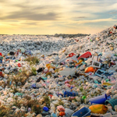
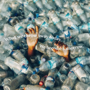

Bumi sedang tidak baik-baik saja. Sampah memenuhi lautan, bahan kimia mencemari udara, tanah terkontaminasi, pasokan air bersih menipis, dedaunan hangus menjadi abu, dan partikel abu vulkanik memenuhi langit. Namun, manusia justru semakin kejam dari hari ke hari. Mereka mengeluh bahwa suhu cuaca membunuh mereka dengan sinar matahari yang terasa membakar kulit, padahal kenyataannya, merekalah yang membunuh diri mereka sendiri melalui tindakan mereka.